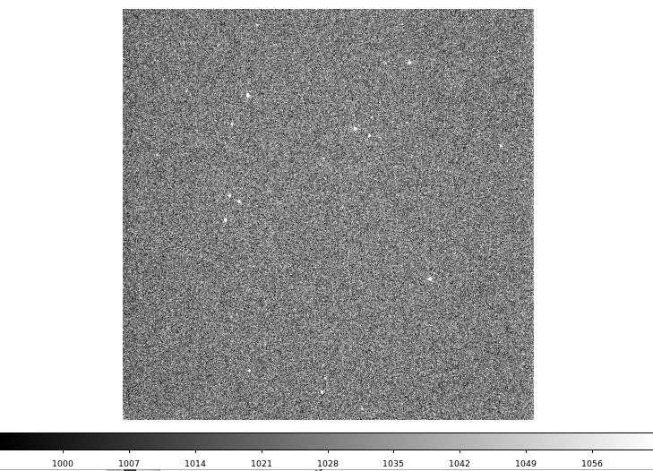
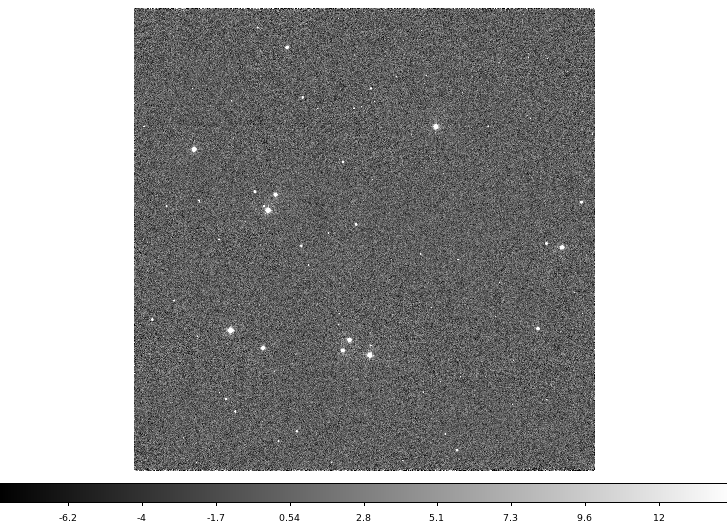
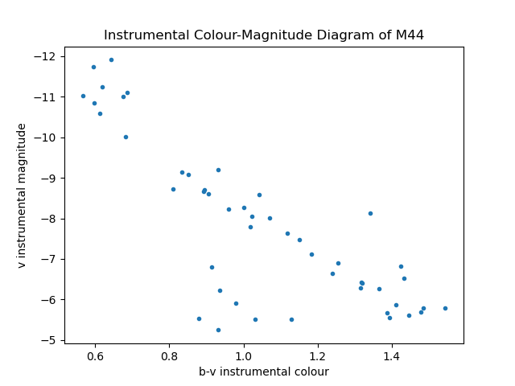
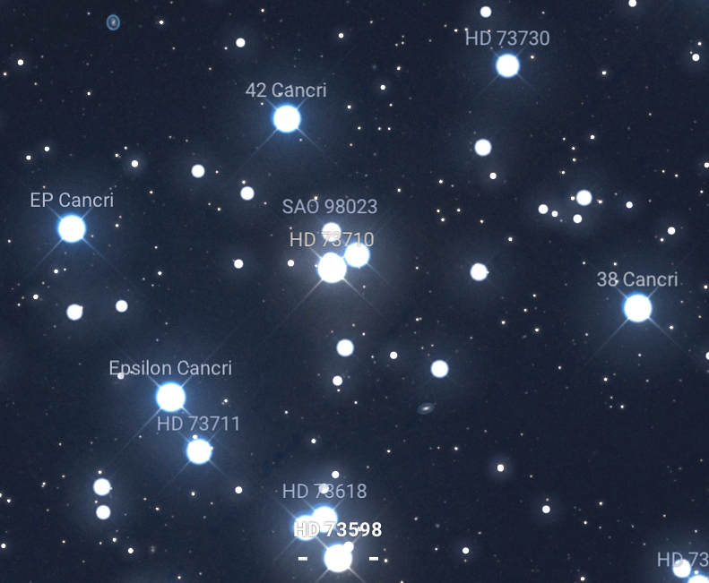
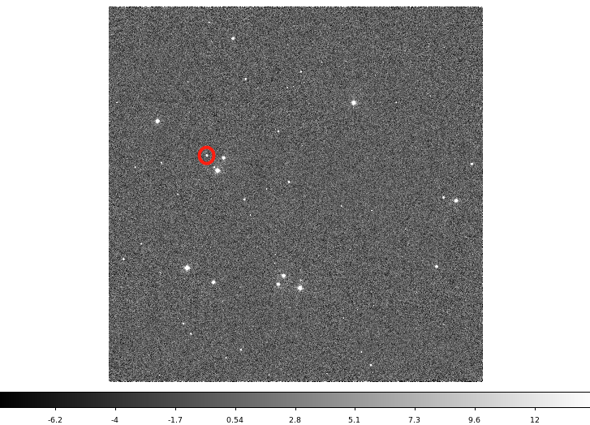
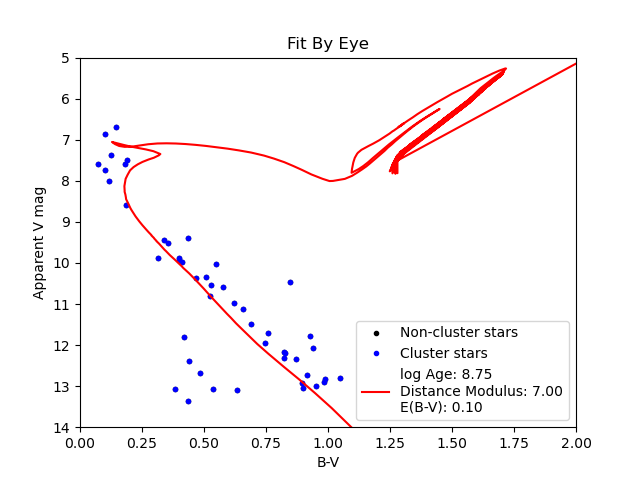
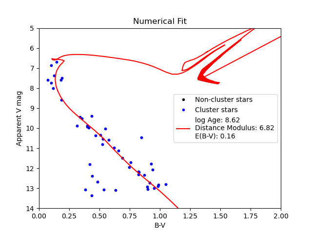
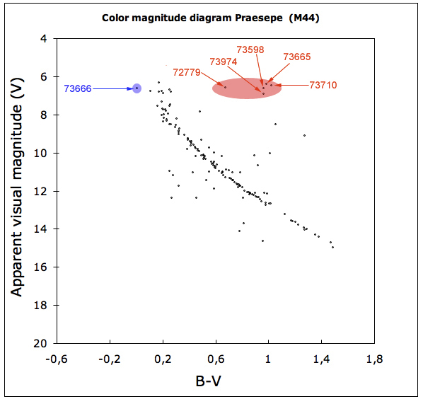

The Beehive Star cluster(M44, Praesepe) is one of the nearest open cluster in Cancer constel- lation. This report contains details about the fitting isochrone method to estimate the stellar age by using the image data from March 15, 2021. Taking in SFU Trottier Observatory over 3 hours. This project is based on anaconda environment python and contents a lot of special function. There are many different algorithms to analysis the data and image, but I can't provide all the details or this article will be very very long... which no one wants to read a 3 hours article about the logic behind code right:)? If the word is bold, then it is a algorithms or method. If you want to learn more about the detail, feel free to contact me.
In 1609, Galileo first observed the Beehive and resolved it into 40 stars. This is the Beehive Cluster, also known as Praesepe, M44, is an open cluster near Earth, with an apparent magnitude of 3.7 and a distance of 520 to 610 light years from the Earth [1]. M44 is highly observable during February to May, by the time Cancer rises high in the sky for northern observers like in Vancouver [2]. It can be easily observe by a CCD. This project focuses on the estimation of cluster age of M44 by using an isochrone, and compare the H-R diagram with isochrone.
By using equation
$$S_{\textrm{C}} = \frac{S_{\textrm{R}} - t{D} - B}{F}$$
where Sc stands for calibrated science frame, Sr is the raw data frame, t is the exposure time, D is the master dark current, B is the master bias and F is the master flat. I can get the calibrated image from raw data image.
With calibrated image, in order to make the a H-R diagram, I need to shift the calibrated images to a common pixel frame using reproject_interp command with World Coordinate System(WCS). This step will align all the exposures onto same pixels. Then combine pixels into a single image by using sigma_clip method.
In order to show sources only, sky subtraction from python sep will be very useful. By using Background algorithm to do background estimation, I can get a sources only image which the sources can be detected by using extract algorithm.On March, 15, 2021 at 9pm. By using CCD camera at SFU Trottier Observatory with exposure time = 5 sec for single exposures and bin = 1, our group collected a total of 35 images, 12 exposures, each exposures have three bands, bandV, bandB and bandR. However, our group interrupted data collection processing at second exposure, and changed WCS setting. So I will only use the acceptable image data which start from third exposures to the end. Here is the raw data image(opened in ds9 on HPC server) 1. 
First, in the calibrateM44 file, I prefer to calibrate the image because of CCD systematic noise, there are three types in my case: bias, dark and flat. By using Eq. (1), I can get a set of calibrated datas. In python file, I need all the master files for bin = 1 to calibrate the image. The loop is for all files from third exposures to the end and calibrate all images by using the formula. Next, I need to do alignment about pixel-to-WCS conversion by creating a bigger board(or canvas). In align file, by using find optimal celestial wcs command, it finds an optimal size of canvas that will fit with every pixel and WCS coordinate images. Then using a loop and reproject interp to loop over all calibrated image. This step will map the pixels of image to the canvas. After that, use command sigma clip, which avoid the effect of outliers [3] such as cosmic rays. Take the mean value of it, adjusting pixels to zero if there were no good pixels to take a mean. Finally combine all adjusted parameters such as exposure time and airmass into a new file. Next step I did(in sky subract file) was subtracting the background bu using source extractor algorithm from python sep. The parameter in sep.Background declares a box and a filter. It creates a smooth image background. By subtracting the sky background data from image data and use deblending algorithm sep.extract. I get a table of extracted data and a clear image of M44. See Fig. 2.
For photometry analysis, I use sep.kron_radius from the photometry file to find the light- weighted size with sky-subtracted image, the position of the star from the extracted table, semi-major, semi-minor, and position angles of all objects. Then, by using sep.sum ellipse to sum data in elliptical aperture. This step is used for extracting the light sources from each band image. By using the equation
$$M = -2.5\log(\frac{counts}{t})$$
where counts are the flux, t is the exposure time and M is the magnitude, to compute the magnitude and magnitude error with standard error derivation of Eq. (2). The function getMags uses kron radius to calculate the magnitude and magnitude error. Also, I need an extinction coefficient to correct the magnitude, this value may change for each night. In my case, I use 0.54 for V-band, 0.76 for B-band, and 0.41 for R-band. Next, I match stars in different catalogs by using the function matchTables based on right ascension and declination coordinates. Finally, run over all bands to get values for the instrumental magnitude of V-band and B-band. So I can create an H-R diagram. See Fig. 3.
Compare the image with Stellarium M44 [4]. See Fig. 4 . We can see that the far left bright star is the 42 Cancri. The dim star is SAO 98023, which is a good selection for a reference star to calculate apparent magnitude. The magnitudes data are: MagV = 9.45, MagB = 9.79. See Fig. 5. The red circle star is the reference star, SAO 98023. The pixel location from ds9 is x = 1088.15 and y = 2489.97. The center of the cluster is at x = 2087.24 and y = 1890.91. Because the cluster is very huge, the image I took doesn’t cover all parts of it. So all the stars in the image belong to the cluster, I choose the radius of the cluster to be half of the diagonal line of the square image, so it can cover all the stars. Then, by using the coordinate of the reference star. I can use argmin to find the index of a minimum distance for the reference star. So I can calculate the magnitude offset from the given value. The offset between the actual B-band magnitude of the reference star and the B-band instrumental magnitude is:
 I select an isochrone with the lowest log Age of 6.0, the highest log Age of 10.0 with a 0.2 log Age interval and metallicity of 0.019. I compute the b-v value for isochrone and get the log age value from the isochrone table. To plot isochrone with M44, I only need a single isochrone with some specific values for logAge, distance modulus, and E(B − V ). The function plotIsochrone from fitCMD file declares that. It states a unique isochrone that is closest to the given log-Age and chooses only the data point belonging to the closest isochrone. Then it computes the new shape of the isochrone after the distance modulus and reddening are applied. This function is for choosing an acceptable initial guess for fitting. I choose logAge to be 8.75, distance modulus to be 7, and E(B − V ) to be 0.1. Compared to the H-R diagram for M44, see Fig. 6. We can see that the line passes through the main sequence well. So I can do the fitting now. The function isochroneDistance from fitCMD file states the fitting function. It creates a linear interpolation factor and uses it to interpolate between the minimum distances of
We can see that the line passes through the main sequence well. So I can do the fitting now. The function isochroneDistance from fitCMD file states the fitting function. It creates a linear interpolation factor, uses it to interpolate between the minimum distances of two isochrones, and uses these isochrones to find the theatrical values for apparent magnitude, B-V. Then use sigma clipping to exclude the stars outside of the distance of 3σ from the isochrones. The next function fitfunction from fitCMD file indicates the parameters used in the function isochroneDistance. Plugin the fitfunction with the initial guess value. I got a log Age value of 8.62, a distance modulus value of 6.82, and an E(B − V ) value of 0.16. See Fig. 7.
The optimized values for log Age, distance modulus, and reddening are 8.62, 6.82, and 0.16. The log Age is 8.62 implies that the cluster age is around 417 million years. Compared with the previous result of the estimated age of 500-700 million years, the value is a bit off. The reasons for it, first, compare the H-R diagrams of my data and Fig. 8 from Star Observer [6]. We can see that for my data, I don’t have the points for red giant, this will cause the fitting curve to curve less right side at the top left part above the turning point. Second, the value for metallicity I use is similar to the Sun(0.019), which may not be the same for M44. According to Explaining the Praesepe blue straggler HD 73666 by L. Fossati, S. Mochnacki, J. Landstreet and W. Weiss [7], the isochrone metallicity for M44 could be z = 0.024.
The estimation of the M44 cluster age is close to the previous experimental result, but without the whole cluster stars, the value is lower than my expectation. However, the brightest stars will saturate if the exposures are too long. The red giants are hard to be observed. For reference star selection, I should use the dimmest star around turn off as a reference. This would give a good apparent visual magnitude range of M44.